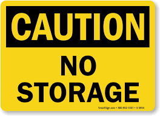

Working Securely
Working with Personal Data and GDPR Compliance
When conducting research with Qualtrics, you will often collect and process personal data. Personal data is protected under the General Data Protection Regulation (GDPR).
When using Qualtrics to collect research data, GDPR compliance should be considered from the start of the project. Researchers must ensure that personal data are collected on a valid legal ground, that participants are properly informed, and that the subject’s rights are upheld. Depending on the study, additional requirements such as a DPIA or data sharing agreements may apply. Please refer to this GDPR guidance page for more information on how to comply with GDPR requirements in research.
Qualtrics Features and GDPR Considerations
Qualtrics offers a wide range of features that can influence how personal data is collected, processed, stored, shared, or transferred.
The sections below highlight several of the most commonly used features within the organisation and explain their potential GDPR implications. However, this overview is not exhaustive. Other Qualtrics functionality, settings, integrations, or design choices may also affect the processing of personal data.
Researchers should therefore carefully consider the privacy implications of the features they enable, and the survey configurations they choose. As a general principle, privacy and data protection considerations should be assessed whenever selecting or configuring Qualtrics functionality for research purposes.
After Collecting Your Data: Consider an Appropriate Data Storage Tool
Qualtrics is intended for the collection and management of survey data and should not be used as a data storage platform.

When data collection is completed, please delete all data from Qualtrics as soon as possible. It is strongly recommended that all research data is transferred three months after data collection is completed at the latest.
Transfer all data from Qualtrics to an appropriate data storage solution and make sure to delete the data in Qualtrics as soon as the transfer is completed. The Data Storage Finder can assist you in finding appropriate storage platforms and you can contact your Faculty Data Steward or the RDM Support Desk if you need more advice on this.
Following the above, Qualtrics should never be used as an archive for long-term storage of your data after your research has been completed.
Survey Security and Response Anonymisation
For studies involving personal data, researchers can enable Anonymize Responses, which removes identifying information such as IP addresses, location data, and other metadata from responses before they are stored, contributing to GDPR compliance and participant confidentiality. Researchers should carefully review these settings and select the options that are appropriate for their study design and data protection requirements.
For further details on the available security settings, see the Qualtrics Security Survey Options documentation.
Survey Distribution: Anonymous Survey Links and Personal Data
Qualtrics allows for a survey distribution method called “Anonymous Survey” or “Anonymous Links”. “You can distribute your survey by pasting this link into an email, onto a website, or into any mode of communication you use with your recipients. Anyone who clicks on the link will be able to take the survey.
It’s called the “anonymous” link because it does not collect identifying information such as name or email address, unless you specifically ask for it in the survey. However, by default, the anonymous link will collect the user’s IP Address and location data based on that IP Address” (see the Qualtrics Knowledge Base).
From a GDPR perspective, an “anonymous” survey should not automatically be considered anonymous, as the processing of personal data depends on the survey design, the questions asked, and the privacy settings selected. Researchers should therefore review their survey configuration carefully and enable safeguards such as Anonymize Responses where appropriate. For further information on the behaviour, limitations, and privacy implications of anonymous survey links, please consult the Qualtrics Anonymous Link documentation.
Survey Distribution: Email Distribution and Personal Data
When using Qualtrics email distributions, researchers should be aware that email invitations are linked to identifiable recipient information and can be associated with survey participation and response status. Distribution histories may also contain email addresses, individual survey links, and participation metrics, which means that personal data can be processed even when survey responses themselves do not contain direct identifiers.
To reduce privacy risks and support GDPR compliance, surveys should be configured to minimise the collection and retention of personal information where possible. As a best practice, enable Prevent Indexing, Secure Participants’ Files, and Anonymize Response in the Survey Options. In addition, add an End of Survey element and select Do NOT record any personal information and remove panel association. These settings help to limit the link between respondents and their survey responses and reduce the amount of personal data retained within Qualtrics.
Researchers should nevertheless assess whether email distributions are appropriate for their specific study and ensure that any processing of participant contact details has a valid legal basis and appropriate safeguards; see Survey Options Overview and Email Distribution Management for details.
A method to distribute surveys without the Qualtrics built-in email distribution functionality is explained with detailed instructions provided by FGB’s Research and Policy Support Team.
Automatic Survey Translation and GDPR Considerations
Qualtrics offers an Automatic Survey Translation feature that can translate survey questions, blocks, or entire surveys using third-party services by Amazon Translate and Google Translate.
When this feature is used, the text of the survey questions is transmitted to the selected external translation provider and returned in the target language. Qualtrics states that only the survey text is sent for translation and that respondent data is not transferred as part of this process, see the Qualtrics Knowledge Base.
Researchers should therefore carefully assess whether automatic translation is appropriate for their project and ensure that any transfer of information complies with applicable GDPR requirements and institutional policies. Where necessary, consider using manual translation methods instead.